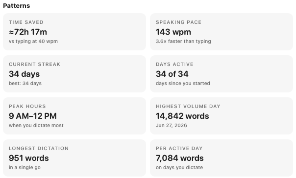
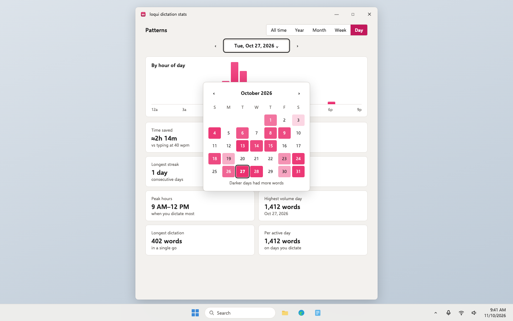

Loqui · Plan · Draft 1 · November 10, 2026
Loqui for Windows, step 4: dictation stats
The Mac's stats window on Windows: words, pace and time saved, the charts, and the calendar that jumps straight to a busy day.
What approving this does. A builder adds the stats window to the Windows app, and both apps are checked against one shared set of worked figures so their numbers always agree. It accepts my recommendation below unless you change it.
Your words
November 10, to Aiva"I need you to have it spin up a plan to create a Windows version of this product."
What changes
- The stats window. All-time words, dictations and words each; today, this week and this month against the one before; the last 30 days and words by month.
- Patterns for any period. All time, year, month, week or day, with arrows to step and the period spelled out: by weekday, by hour, and the eight tiles (time saved, speaking pace, streak, days active, peak hours, highest volume day, longest dictation, per active day).
- The calendar picker. Click the period to open a calendar shaded by how much you dictated, and click the heavy day to jump to it, as on the Mac.
- The same numbers on both. One sample stats record with its worked answers is shared; the Mac and Windows apps must both produce those exact figures.
- Opens from the tray menu (Dictation stats) and updates while open when you dictate.
Who it's for: public. Still a test build on the GitHub check page.
Screens, before and after
"Before" is the real Mac app, drawn from its own code with sample data, and the Patterns picture from the download page. "After" is the Windows look drawn in a separate page and photographed. Desktop app, so there is no phone size. Click any picture to see it big.
Stats


Patterns and the calendar picker



Empty, loading, error and no permission

- Empty: no dictations at all, as above. A period with none says "No dictations in March 2026." instead of eight zero tiles, as on the Mac.
- Loading: years of records add up in well under a second; no spinner.
- Error: a damaged line in the stats record is skipped and the rest still count, as on the Mac.
- No permission: none needed.
Risk
Not risky. Why: it only reads loqui's own stats record on your PC, which never holds what you said.
Decisions, with my recommendation
Approving this draft says yes to each recommendation unless you change one.
1. How the charts are drawn
- Recommended: loqui draws its own simple bar charts, matching the Mac's.
- Use a ready-made chart library.
Why: the charts are only bars with hover labels; drawing them ourselves keeps the Mac's exact look and adds nothing to download or keep updated.
Not in this plan
- Combining stats from your Mac and your PC. Each computer keeps its own record.
- New statistics the Mac doesn't have.
Checkpoints
- Same numbers (GitHub): the Mac check and both Windows checks list every shared stats figure as passed. STAT-07
- Your stats (Windows test machine): after a few dictations, open Dictation stats from the tray. Today's words match what you said. Pick Day, click the date and choose another day from the shaded calendar; step back with the arrows; pick Month and Year. Dictate once with the window open and watch Today change. STAT-01 to STAT-06, STAT-08, A11Y-02
For the agents
Build notes
- Checks to turn green: STAT-01 to STAT-08, A11Y-02. Earlier steps' checks keep passing.
- Existing code to reuse: Mac
StatsView.swift(StatsModel: grains, offsets, period labels, comparisons, streaks, peak hours, time saved against 40 words a minute typing, pace only from entries with seconds, the "No dictations in …" rule, tile retitling under a filter) andPeriodPicker.swift(day and week grids, month grid, year list; shading on an absolute scale against the busiest day or month ever, with a square root so quiet days still show; "Picks the whole week"). - Same numbers: add
shared/stats-cases.json: one sample dictation log, a fixed "now", a fixed time zone and first weekday, and the expected figures for every card, chart total and tile at each grain. On the Mac, add a test seam so StatsModel can take entries and a clock (no behaviour change) and test it fromTests/loquiTests. On Windows, the figures are computed inloqui-core(Rust) and tested there; the screen only draws them. - Charts: plain SVG bars in React using step 1's tokens; hover and keyboard focus show the Mac's tooltip text; each bar has an accessible label ("Oct 27: 1,412 words").
- Shared interfaces and owners: the stats command's result type is defined in
loqui-coreand exported to TypeScript (owned here). The tray menu's Dictation stats item (from step 3) opens this window. - Testing without Windows: as step 3: the screen runs in a browser on a fake backend for Vitest, Playwright and the axe scan; the Windows check photographs the real window light and dark.
- Data and outside services: reads
dictation-log.jsonlonly. No network. - Can't be undone: nothing.
- Staging and rollback: test build on the check run.